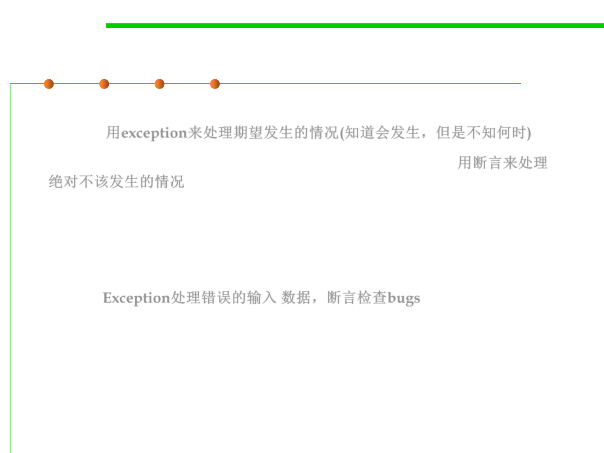

Assertions vs. exceptions
7.3 Assertions and Defensive Programming
▪ Use error handling code (exception) for conditions you expect to
occur; 用exception来处理期望发生的情况(知道会发生，但是不知何时)
▪ Use assertions for conditions that should never occur 用断言来处理
绝对不该发生的情况
– Assertions check for conditions that should never occur. Error handling
code checks for off-nominal circumstances that might not occur very
often, but that have been anticipated by the programmer who wrote the
code and that need to be handled by the production code. Error-handling
typically checks for bad input data; assertions check for bugs in the
code. Exception处理错误的输入 数据，断言检查bugs
– If error handling code is used to address an anomalous condition, the
error handling will enable the program to respond to the error gracefully.
– If an assertion is fired for an anomalous condition, the corrective action is
not merely to handle an error gracefully—the corrective action is to
change the program’s source code, recompile, and release a new version of
the software.